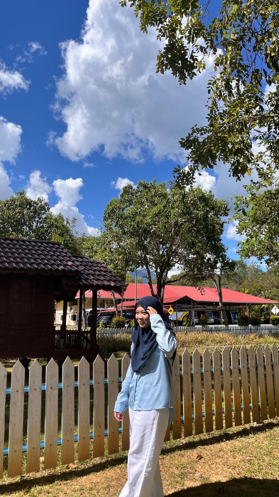

|  | |
| Name | Maryam Binti Kalid |
|---|---|
| Age | 20 Years old |
| Gender | Female |
| Race | Malay |
| Nationality | Malaysia |
| State | Kedah |
| City | Pokok Sena |
| Hobby | Listening to musics and reading |
Born and raised in Pokok Sena. I am twenty years old and was born on May 4, 2004. I'm interested in studying science, technology, and literacy. I identify myself as someone who is dedicated, innovative, and eager to learn new things.
<